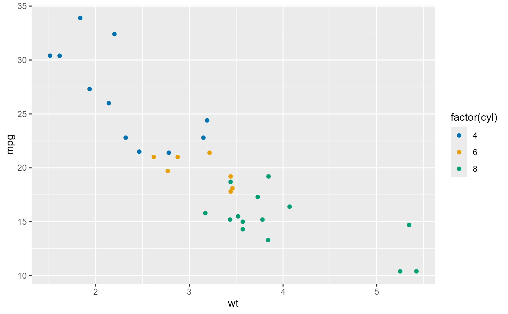

Generates colors from the actiRhythm palettes for visualizations. These colors match the CSS design system.
Examples
actiRhythm_colors(4)
#> [1] "#0072B2" "#E69F00" "#009E73" "#CC79A7"
# \donttest{
library(ggplot2)
ggplot(mtcars, aes(wt, mpg, color = factor(cyl))) +
geom_point() +
scale_color_manual(values = actiRhythm_colors(3))

# }